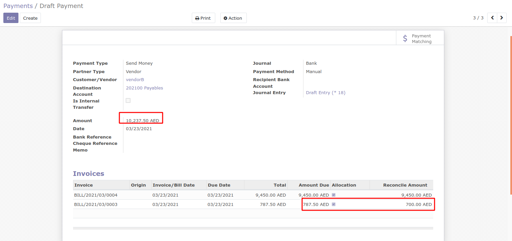

HOW TO USE THIS MODULE
Here, there are two Vendor Bills for Vendor A which is open for payments.
Since it is vendor bills, payments can be made from vendor payments. Where payment
type will be send money. By selecting the partner, automatically the open vendor bills
comes in the invoice lines. By clicking on the checkbox in the allocation, the payment amount
will be allocated to make the payments.
The payment status of both the vendor bills is changed to the paid state.

There are scenarios where you don't want to make full payment at a time and
the payment amount is greater than the allocated amount. For example amount
to be paid is 10,237.50 AED and the allocated amounts are 9450 and 700 respectively,
which is less than the payment amount.
After Payment confirmation, you can see one of the bill is partially paid.
So the remaining amount will be considered as outstanding , which can be made paid
later directly from the vendor bill.
In some cases, you will not require to pay full amount. In such scenarios the Payment Amount
will be less than the allocated amount. If payment amount is 12000 and we can pay only 1000
as final amount. Then the remaining 200 will be written off.
Here, the payment difference is captured in an separate account.
As seen in the Journal Entries, the remaining amount will be captured in the payment difference account.
Finally , after confirming the payment both the bills will be in the Paid state
 Since it is vendor bills, payments can be made from vendor payments. Where payment
type will be send money. By selecting the partner, automatically the open vendor bills
comes in the invoice lines. By clicking on the checkbox in the allocation, the payment amount
will be allocated to make the payments.
Since it is vendor bills, payments can be made from vendor payments. Where payment
type will be send money. By selecting the partner, automatically the open vendor bills
comes in the invoice lines. By clicking on the checkbox in the allocation, the payment amount
will be allocated to make the payments.